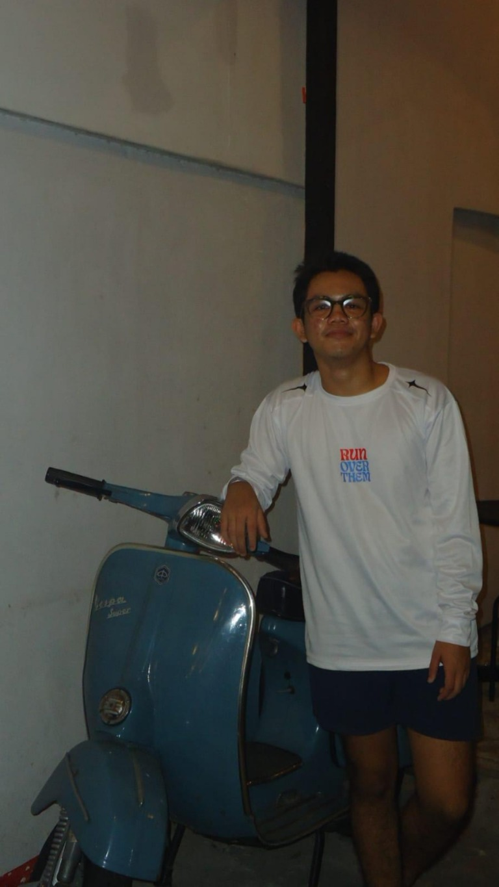

Identitas Sang Pengembara
Data Ksatria
Dua Pilar Perjalanan Ilmu
Kenangan SMA & Perjalanan Kuliah
Abadi Dalam Ingatan
Galeri Kenangan
Klik foto untuk melihat dalam ukuran penuh.
Ruang Arsip & Pengetahuan